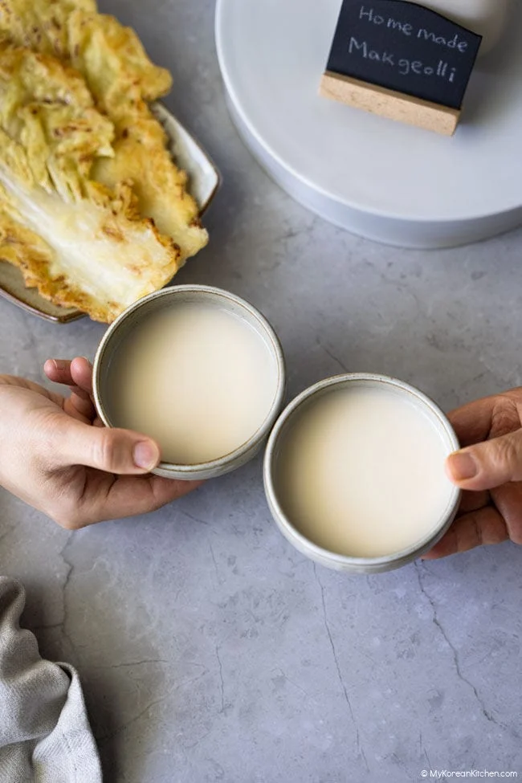

Makgeolli (Korean Rice Wine)
Description
Makgeolli (막걸리) is traditional korean rice wine made by fermenting rice with nuruk (누룩) and water. It has cloudy, milky appearance and is usually lightly sweet, tangy, and gently fizzy, with a soft rice aroma.

Main
- 900 g (31.7 oz / 4 cups) uncooked short-grain white rice, as sushi rice
- 1 liter (4 cups) water, for fermentation
Yeast Mixture
- 1 tsp dry yeast
- 1/2 tsp granulated sugar
- 80 mi (1/3 cup) water
Nuruk Mixture
- 2/3 cup nuruk
- 165 mi (2/3 cup) water
To finish
ß
- 2 liters (8 cups water)
- 6 Tbsp granulated sugar
Steps
- Prepare the yeast and nuruk mixtures
- Soak and steam the rice
- Cool the rice
- Mix the rice and nuruk
- Add the yeast mixture
- Start the fermentation
Home